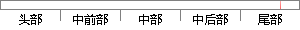

3-1 创建2个任务，1个任务在时钟节拍为10时申请一个内存块，另一个任务在时钟节拍为20时申请一个内存块，申请的内存块写进当前的系统时钟节拍，并打印出当前内存块的信息。
片段位置图

相似结果
1
原句片段：3-1 创建2个任务，1个任务在时钟节拍为10时申请一个内存块，另一个任务在时钟节拍为20时
相似片段：“C” ,另一个 任务 B 显示“HINA” ,程序运行...中创建一个 10 个块,每块长度 10 个字节的内存...②X 任务每运行 2 次,获得此时的时钟节拍数,请求...
| 标题 | 《实时操作系统程序设计实验报告总模板5次_免费下载_百度文库》 |
| 对比库 | PaperRater云论文库 |
| 网址 | http://wenku.baidu.com/link?url=wC2MvQBPHI4zYcVWYdIBkVS17kN_v_ggHfSmlPYLwp-AJ131P1Nz58oZO2bTIucKtUJaTtJODy4zTUymRgXV3bUwqrC8mQ7wcm-VKycVOtu |
| 相似率 | 60.53% （轻度抄袭） |
2
原句片段：申请一个内存块，申请的内存块写进当前的系统时钟节拍，并打印出当前内存块的信息。
相似片段：由于申请的内存块大小变化较慢且大部分占用时间不长...因为释放一个内存块时,要搜索两个链表,所以释放一...获取当前系统的时钟节拍数为 28212: 3)在for循环...
| 标题 | 《嵌入式系统的内存管理设计研究》 |
| 对比库 | 中国学位论文全文数据库 |
| 作者 | 丁南菁 |
| 机构 | 北京工业大学 |
| 分类 | 微电子学与固体电子学 |
| 年份 | 2010 |
| 相似率 | 78.57% （轻度抄袭） |
※ 片段修改建议 ※
近似词参考：- 系统：体系
- 任务：使命 义务
- 创建：建立 创立
- 节拍：节奏
系统自动生成语句：3-1 建立2个使命，1个使命在时钟节奏为10时申请一个内存块，另一个使命在时钟节奏为20时申请一个内存块，申请的内存块写进当前的体系时钟节奏，并打印出当前内存块的信息。
注：本片段修改建议为系统自动生成，仅供参考。